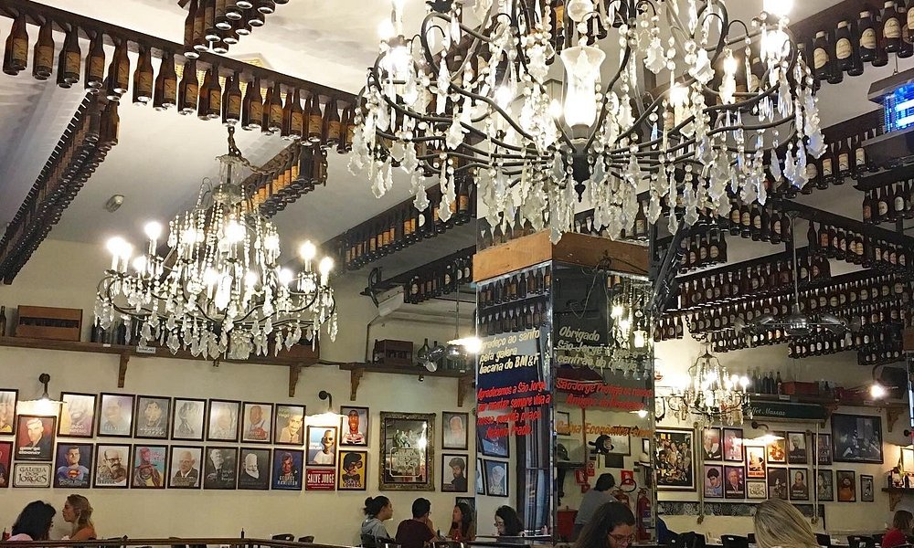
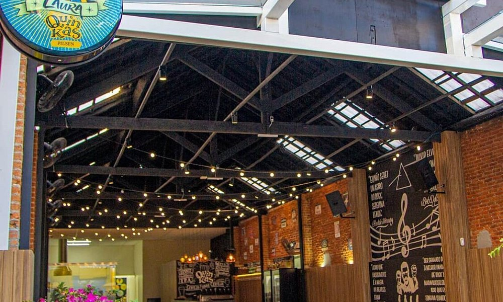

Restaurantes
Sky Halll
Italiana, Francesa
Restaurante intimista com opções mediterraneas mirando principalmente a gastronomia da Itália, Espanha e França.
Assinado pelo Chef Martin Casilli
Bistrot de Paris
Francesa
Instalado na Villa San Pietro, escondida no meio da agitação dos Jardins, o Bistrot de Paris foi repensado em
todos os detalhes para se tornar um autêntico bistrot francês.
Acrópoles
Frutos do mar, Mediterrânea
Restaurante grego informal que serve polvo ao molho vinagrete, moussaka, lula recheada e vinhos.
Sai Gon
Internacional, Asiática
SABORES VIETNAMITAS E ASIÁTICOS AQUI NO MISS SAIGON. BEM-VINDO AO MISS SAIGON. O Miss Saigon é um restaurante
asiático que surpreende você com sabores exóticos e o uso de temperos. Divirta-se conosco e seja feliz e saudável.

Salve Jorge
Bares e pubs, Brasileira
Menu diversificado de refeições completas, petiscos e cerveja, em ponto de encontro para confraternizações.
Nico Pasta & Basta
Italiana, Europeia
Restaurante italiano clássico e refinado com adega de vinhos em ambiente colorido e paredes repletas de arte.

Quinkas Bar Ipiranga
Bares e pubs, Brasileira
Restaurante com parede de tijolos e terraço. No cardápio, hambúrgueres, petiscos, feijoada e cerveja artesanal.
Restaurante Kleine-Gasse
Alemã
Restaurante típico alemão há 7 anos oferecendo qualidade no cardápio e no atendimento, com seu prato tradicional e
carro chef O joelho de porco. Conta também com outras opções de comida alemã e sul americana.
Sapporo
Japonesa, Frutos do mar
Restaurante intimista com rodízio de sushi e cardápio à la carte com outros pratos japoneses tradicionais.
 Tandoor
Indiana, Asiática
Local modesto com pratos da cozinha indiana tradicional preparados com muitas ervas e especiarias.
Tandoor
Indiana, Asiática
Local modesto com pratos da cozinha indiana tradicional preparados com muitas ervas e especiarias.